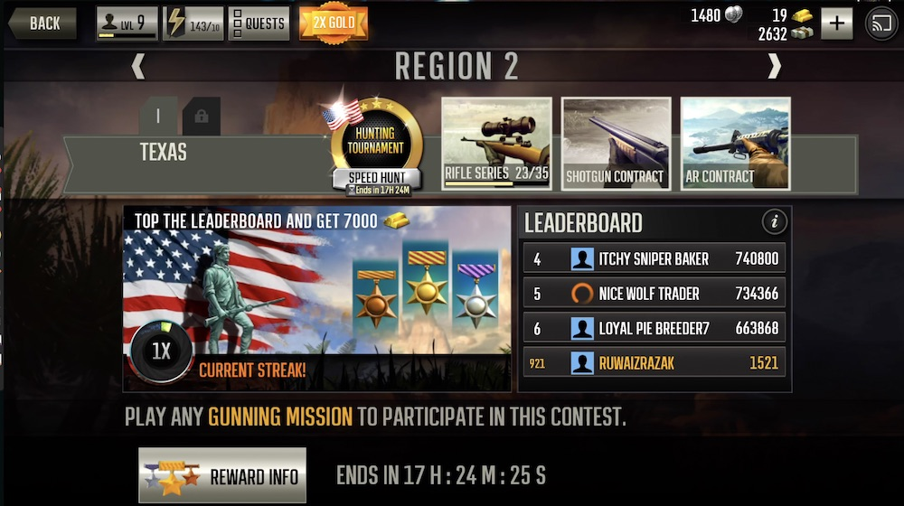
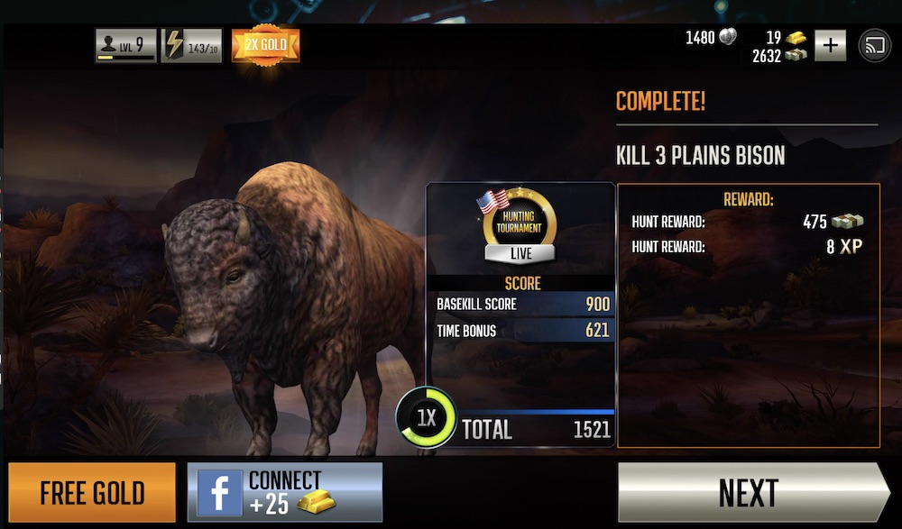

BUILDING THE EVENT SYSTEM
| COMPANY | ROLE | YEAR |
| Glu | Assoc. UX Designer | 2018 |
I joined Glu mobile during the month of March 2018. Since then, I've been working on Deer Hunter 2018, Dino Hunter, Quizup and seldom on Deer Hunter Classic.
Even though, my design process are well defined, sometimes I alter some of the steps depending upon the project or feature that I'm working.
This document defines how we dealt with designing the event system for Deer Hunter 2018
My role
On this feature, my role was to partner with Design lead to support his game design spec with interaction design
Research
I started to work on the project after a month from the date of joining. Being the only user experience designer on the floor coupled with my inexperience in gaming made me invest more time in research than I usually did.
I started learning more about the game and its user base before jumping into the problem that we needed to solve. I went through lots of user research reports, results of our user experience studies, played multiple games from our franchise and outside of our franchise in shooting genre to understand how the games use different methods to engage users.
Next stage was to talk with our Quality Assurance team to understand more about Deer Hunter 2018 and to keep track of the scenarios within the game I might've missed during the research. I also relied heavily on our Game designing team to understand certain features on which I was lacking clarity.
Identifying the objectives
Once I built some ground knowledge on our game and other games in the same genre, I started discussing more with my lead aiming to understand his vision about the feature as I wasn't part of the initial discussion.
I also had discussions with Product Manager and Producers to understand their requirements or vision regarding the product.
Competitor Analysis
As we wanted the feature to have an event system which can be sent without a binary and lies in align with the game's core loop, I started looking at lots of games which have any events inside them.
These are the few games i loved the most among 14+ competitor products.
1.Clash Royale
2. Hero Hunters
3. League of Legends
4. Marvel Contest of Champions
Competitor analysis and the researches I did initially were an entirely different experience for me. These sessions taught me how a user journey would differ in mobile games from a product application or a service perspective and how can we leverage different emotions of the player to deliver the best experience.
Game System Design
This phase was handled by the design lead and was well crafted. However, as I was handling the interaction design aspect of the feature we met often in following days to discuss our thought process and the ways to make the feature better.
Design
Once we got equipped with the above items, we started the design phase. Which involved the following steps
1. Red map analysis to understand the priorities of each element in the feature
2. Information Architecture, to make sure that the new feature won't be an extra cognitive load on the users.
3. Interaction Designing
4. Defining VFX for delivering the best experience.
Here are some screens that got derived from our process.
Leaderboard Screen (event homepage)
Premission Screen

Results
Support during development
Once design was done, we handed it to the dev team. During the development phase, we realized that there were multiple scenarios within the game that none of us were aware of. By collaborating with the developers and UI artists, we solved these scenarios in such a way that it won't stretch the product timeline.
The outcome of the feature
Once we implemented the feature, we noticed monetary benefits on the days in which event was active, also we noticed that user's progression rates within the game got improved during the days in which events are active.
We also designed an internal tool at server side using which we can configure the events so that it would help the game designers in launching weekly events without sending a build.
Why is this important for me?
- Even though I worked on products in the past, this feature taught me how to work across multiple teams back and forth to bring out a feature live.
- This feature, allowed me to understand the differences of the customer (or user) journey in a game and in a product.
- This feature taught me about implementing a feature in a legacy system without disrupting the entire product. This phase was important for Deerhunter 18 as the game was live for last 3+ years and with a very loyal user base.
- It also taught me the entire process of developing a feature from scratch and improvising it based on its performance in live-ops scenario.
Project Link
Try our game: DEER HUNTER 2018